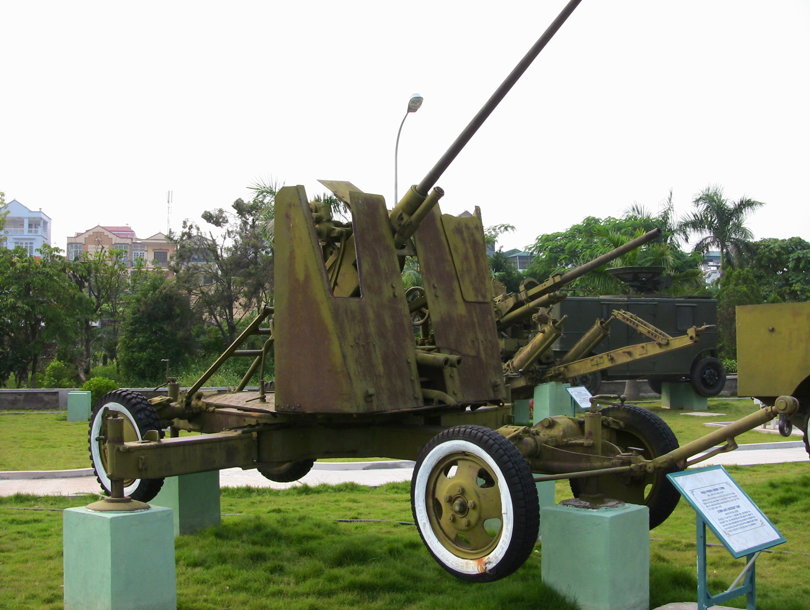

Hoàng Vân (tên khai sinh: Lê Văn Ngọ, 24/7/1930 - 4/2/2018 ở Hà Nội) là một nhạc sĩ hàng đầu của nền âm nhạc chuyên nghiệp Việt Nam, ông có một sự nghiệp sáng tác phong phú với thành công trên rất nhiều thể loại. Là người có nhiều sáng tác nhất về các ngành nghề kinh tế và sáng tác về các địa phương trở thành bài truyền thống, ông nổi tiếng với rộng rãi quần chúng với hàng loạt ca khúc như "Bài ca xây dựng", "Hò kéo pháo", "Người chiến sĩ ấy", "Quảng Bình quê ta ơi", "Tôi là người thợ lò",...
Ông còn có bút danh là Y-Na (theo tương truyền có nghĩa là Yêu Ngọc Anh – vợ của ông)
Năm 16 tuổi, ông gia nhập Đội thiếu niên cứu quốc Mai Hắc Đế, là liên lạc viên tự vệ khu Đông Kinh Nghĩa Thục (Liên khu I) Hà Nội, rồi làm phụ trách Thiếu sinh quân Trung đoàn 165, Sư đoàn 312. Sau đó, ông tham gia Đội Tuyên truyền võ trang Lao Hà, làm báo chí và công tác địch vận của trung đoàn, sư đoàn và sau đó phụ trách văn nghệ ở Sư đoàn 312.
Hoàng Vân bắt đầu sáng tác từ năm 1951 với những ca khúc được phổ biến rộng rãi tại vùng Tây Bắc, Việt Bắc như "Chiến thắng Tây Bắc", "Chiến thắng Hoà Bình", "Tin chiến thắng",... Năm 1954, ông sáng tác ca khúc nổi tiếng "Hò kéo pháo". Từ đây sự nghiệp sáng tác của ông bắt đầu nở rộ với hàng loạt ca khúc, hợp xướng, hòa tấu. Ngoài ra ông còn viết nhạc cho phim, kịch nói, tác phẩm khí nhạc, dàn nhạc giao hưởng, hợp xướng. Bên cạnh đó, trong kho tàng đồ sộ của ông (khoảng 650 tác phẩm đã xác định), ông đã để lại 4 bản giao hưởng (trong đó "Thành đồng tổ quốc" là bản thơ giao hưởng đầu tiên của Việt Nam - 1960), một bản nhạc vũ kịch "Chị Sứ", một trong những vở ballet đầu tiên của Việt Nam (1968), 4 tác phẩm viết cho đại hợp xướng và dàn nhạc giao hưởng "Hồi tưởng", "Việt Nam muôn năm", "Vượt núi", "Điện Biên Phủ", hàng chục tác phẩm cho nhạc thính phòng, nhạc phim, kịch, múa rối, hợp xướng thiếu nhi...
Sau 1954, ông được cử đi tu nghiệp tại Học viện Âm nhạc Trung ương, Bắc Kinh, Trung Quốc. Khi về nước, ông chỉ huy dàn nhạc đoàn ca nhạc Đài Tiếng nói Việt Nam kiêm chỉ đạo nghệ thuật cho đến 1970, đồng thời tham gia giảng dạy môn sáng tác và phối khí tại Nhạc viện Hà Nội cho đến năm 1989. Từ 1963-1989, ông là Uỷ viên Ban Chấp hành Hội Nhạc sĩ Việt Nam, là trưởng ban sáng tác thanh nhạc và công tác tại Hội cho đến năm 1996. Năm 1975, ông đi thực tập một thời gian tại Nhạc viện Sofia, Bulgaria.
Hoàng Vân vẫn tự hào là ít có người sống trong phố cổ Hà Nội từ lúc sinh ra đến năm hơn 80 tuổi như ông. Hoàng Vân có sở thích viết thư pháp, chơi đồ cổ và đọc sách. Hai người con của ông là nhạc trưởng Lê Phi Phi và Tiến sĩ - nhà nghiên cứu âm nhạc Lê Y Linh đều thành danh.
Ông được trao Giải thường Hồ Chí Minh về văn học nghệ thuật vào năm 2000.
Hoàng Vân qua đời vào sáng 4/2/2018. Trước đó, ông bị bệnh viêm phổi và một số bệnh tuổi già.
Một số tác phẩm tham khảo: (bấm vào link) Con chim vành khuyên Em yêu trường em Hát về cây lúa hôm nay Bài ca người giáo viên nhân dân
Hò kéo pháo là bài hát của nhạc sĩ Hoàng Vân, được ông sáng tác năm 1954.
"Hò kéo pháo" được sáng tác trong chiến dịch Điện Biên Phủ. Hoàng Vân được chứng kiến mọi diễn biến của chiến dịch, thấy được những gian nan vất vả của bộ đội ngày đêm phải đưa những cỗ pháo nặng hàng tấn vượt qua dốc núi chiếm lĩnh trận địa. Những tấm gương hi sinh anh dũng như anh hùng Tô Vĩnh Diện, Phan Đình Giót và bao đồng đội đã thôi thúc nhạc sĩ viết nên lời bài hát.
Bài hát Hò kéo pháo âm vang mãi cùng với chiến thắng lịch sử Điện Biên Phủ.
Tô Vĩnh Diện (1924 – 1954) là một chiến sĩ, Anh hùng lực lượng vũ trang nhân dân người Việt Nam. Anh nổi tiếng với chiến công hi sinh thân mình để cứu khẩu pháo cao xạ 37 mm không bị lăn xuống vực trong Chiến dịch Điện Biên Phủ.
Năm 1946, quân viễn chinh của thực dân Pháp tái chiếm Đông Dương. Tô Vĩnh Diện tham gia chỉ huy dân quân ở địa phương. Năm 1950, tại Thanh Hóa nổ ra một vụ bạo loạn, khiến nhiều dân quân (trong đó có Tô Vĩnh Diện) bị bắt giữ. Chính quyền Việt Nam Dân chủ Cộng hòa phải cử một đơn vị bộ đội xuống giải cứu. Từ đó, Tô Vĩnh Diện chính thức gia nhập quân đội Nhân dân Việt Nam..
Ngày 1/2/1954, đơn vị của Tô Vĩnh Diện (đại đội 827) trên đường kéo pháo ra, đến một con dốc cao và hẹp ở gần Bản Chuối. Anh cùng pháo thủ Nguyễn Văn Chi phụ trách điều khiển càng pháo để chỉnh hướng cho một đơn vị bộ đội kéo dây tời giữ pháo, ngoài ra còn có 2 chiến sĩ phụ trách chèn bánh pháo. Quân Pháp bất ngờ bắn pháo từ Mường Thanh lên, buộc đơn vị kéo giữ pháo nằm rạp xuống, đúng lúc dây tời bị đứt. Lực giữ pháo yếu đi, cả trăm bộ đội vẫn không đủ sức níu lại, khẩu pháo dần tuột xuống dốc. Pháo thủ Nguyễn Văn Chi lái càng phía ngoài bị càng pháo hất xuống vực và pháo trôi dần về phía vực sâu. Tô Vĩnh Diện lập tức bỏ càng pháo phía trong, chuyển sang ghì người vào càng pháo phía ngoài, lấy một chân đạp vào một gốc cây, cố gắng đẩy hướng càng pháo đâm vào vách núi. Tuy cản được pháo lăn xuống vực, nhưng anh cũng bị bánh xe của khẩu pháo nặng hơn 2 tấn đè lên người trọng thương. Chính trị viên tiểu đoàn Phạm Đăng Ty chạy tới cấp cứu, nhưng đã quá muộn. Trước lúc ra đi, anh vẫn còn hỏi "Pháo có việc gì không?".
Cỗ pháo phòng không 37mm, số hiệu 510.681, được nhà nước Việt Nam công nhận là Bảo vật quốc gia. Đây chính là khẩu pháo mà Tô Vĩnh Diện hy sinh khi cố tìm cách chặn không bị lao xuống dốc. Hiện tại khẩu pháo đã được phục chế.
Bấm vào tên bài hát để nghe tác phẩm:
Phan Đình Giót (1922-1954) là một trong 16 anh hùng lực lượng vũ trang nhân dân được tuyên dương vì thành tích trong chiến dịch Điện Biên Phủ.
Phan Đình Giót sinh ở làng Vĩnh Yên (nay là thôn 8), xã Cẩm Quan, huyện Cẩm Xuyên, tỉnh Hà Tĩnh,ông sinh ra trong một gia đình rất nghèo. Bố ông bị chết vì đói. Ông phải đi ở từ năm 13 tuổi và chịu cảnh cực nhọc, vất vả. Sau Cách mạng tháng Tám, Phan Đình Giót tham gia tự vệ chiến đấu. Đến năm 1950, Phan Đình Giót xung phong đi bộ đội chủ lực. Phan Đình Giót đã tham gia nhiều chiến dịch lớn như: Trung Du, Hòa Bình, Tây Bắc, Điện Biên Phủ.
Chiều ngày 13 tháng 3 năm 1954, đơn vị của ông nổ súng tiêu diệt địch ở Him Lam.
Bộ đội đại đội 58 lao lên mở đường, đã liên tiếp đánh đến quả bộc phá thứ tám. Phan Đình Giót đánh quả thứ chín thì bị thương vào đùi nhưng vẫn xung phong đánh tiếp quả thứ mười. Quân Pháp tập trung hỏa lực trút đạn như mưa xuống trận địa. Bộ đội bị thương vong nhiều.
Sau đó, Phan Đình Giót đánh liên tiếp hai quả bộc phá nữa, phá hàng rào cuối cùng, mở thông đường để quân đội lên đánh lô cốt đầu cầu. Quân Pháp hoang mang, vận dụng thời cơ, ông vọt tiến công lô cốt số 2, ném thủ pháo, bắn kiềm chế cho đơn vị tiến lên. Trong đợt xung phong này, ông bị thương vào vai và đùi, mất máu rất nhiều.
Bất ngờ, hỏa điểm lô cốt số 3 của lính Pháp bắn mạnh. Lực lượng xung kích Việt Nam bị ùn lại, Phan Đình Giót bò đến lô cốt số 3 với ý nghĩ là dập tắt ngay lô cốt này. Phan Đình Giót đã dùng sức (khi đã bị thương, mất máu) nâng tiểu liên bắn vào lỗ châu mai, miệng hô to: Quyết hy sinh… vì Đảng… vì dân
Rồi dướn người lấy đà lao cả tấm ngực thanh xuân vào bịt kín lỗ châu mai địch. Do thi thể Phan Đình Giót đã lấp kín lỗ châu mai, quân Pháp bên trong bị vướng không bắn ra được nữa, quân Việt Nam chớp cơ hội xung phong tiêu diệt gọn cứ điểm Him Lam vào ngày 13 tháng 3 năm 1954, giành thắng lợi trong trận đánh mở màn chiến dịch Điện Biên Phủ.
Phan Đình Giót đã hy sinh lúc 22 giờ 30 phút ngày 13/3/1954 ở tuổi 32. Ông là một trong 16 anh hùng lực lượng vũ trang nhân dân được tuyên dương thành tích trong chiến dịch Điện Biên Phủ.